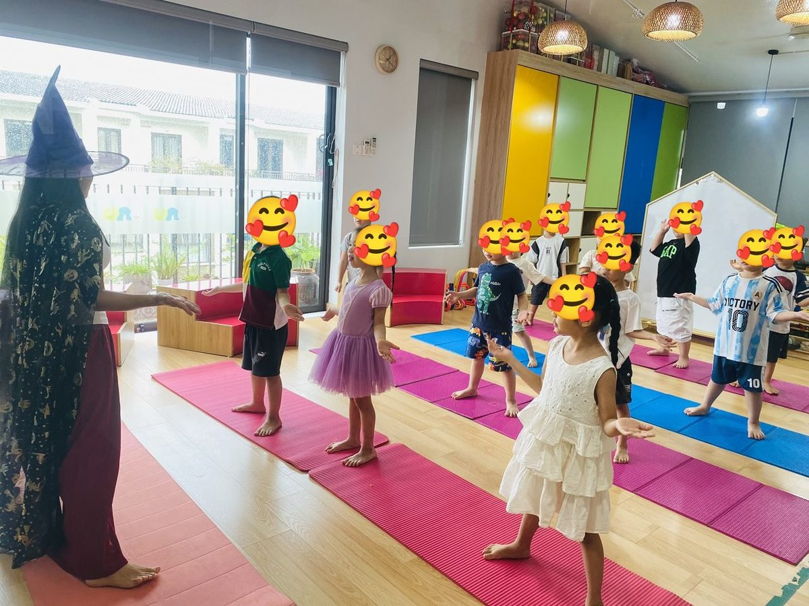
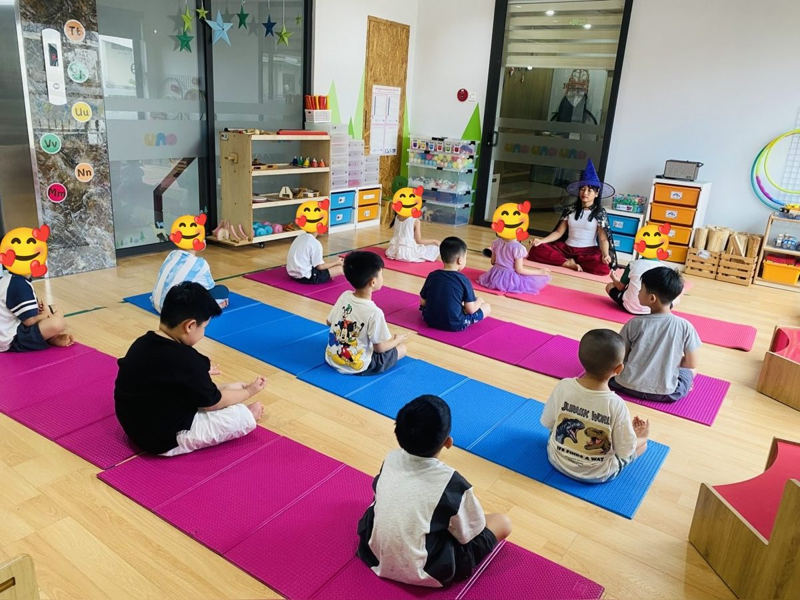
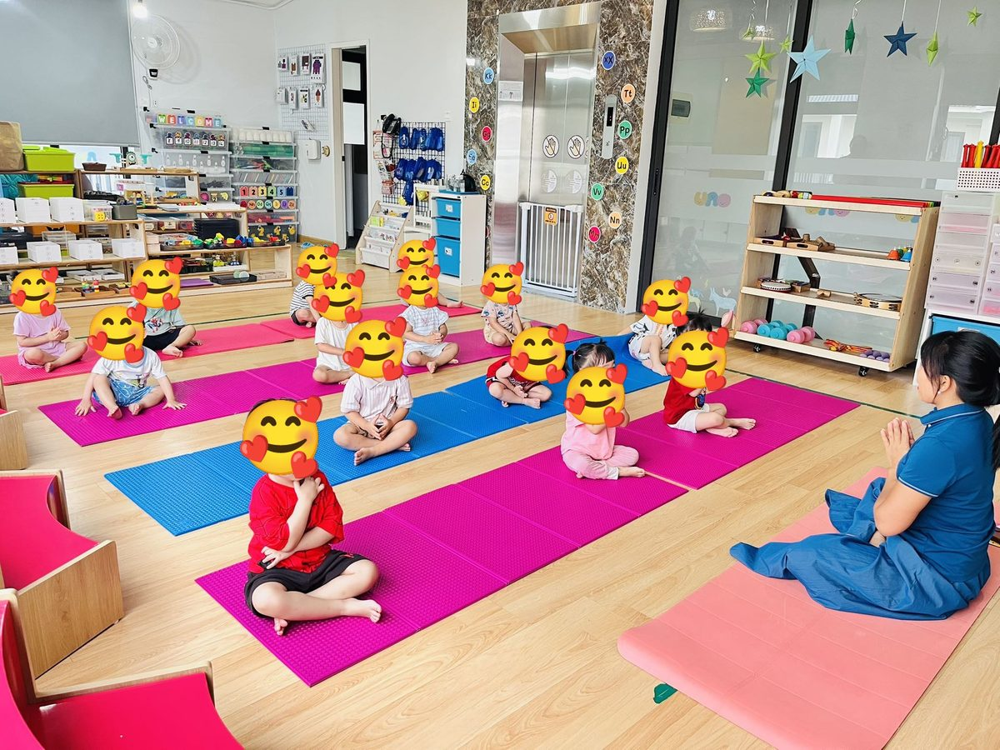

20 trò chơi trong lớp Yoga trẻ em: 10 trò động, 10 trò tĩnh cho khối 10 phút

Nhạc vừa bật. Chưa ai biết lúc nào sẽ “đóng băng”.
👧 Độ tuổi3 đến 10 tuổi
⏱ Thời gianMột khối 10 phút
🎲 Gồm10 trò động + 10 trò tĩnh
🎒 Chuẩn bịThảm, nhạc, một quả bóng, vài đồ nhỏ
Có hôm cả lớp vào phòng như một đàn chim sẻ. Ríu rít. Chạy. Ôm nhau lăn ra thảm.
Cô không bắt các con ngồi yên ngay. Cô bật nhạc.
Mười phút trò chơi là phần các con chờ nhất trong buổi Yoga. Cũng là phần cô chuẩn bị kỹ nhất. Bởi với trẻ con, chơi chính là học. Một tư thế lặp lại mười lần thì chán. Nhưng “đóng băng” thành cái cây mười lần thì vẫn muốn chơi lần thứ mười một.
Bài này Sophia gom lại 20 trò chơi hay dùng ở lớp, chia làm hai nhóm. Trò động cho con chạy, nhảy, lò cò, bò trườn, thi đua, ôn lại tư thế. Trò tĩnh cho con ngồi xuống, lắng nghe, sờ, ngửi, chuyền tay nhau, rèn các giác quan và sự phối hợp hai bên cơ thể. Mỗi trò có tuổi phù hợp, cách chuẩn bị, cách chơi từng bước, cách làm dễ hơn hay khó hơn, và những điều cô hay để ý cho an toàn.
Trẻ con học bằng cả cơ thể. Con chưa ngồi nghe giảng được lâu, nhưng con chơi được rất lâu, và trong lúc chơi con học được nhiều thứ mà người lớn khó dạy bằng lời: chờ lượt, dừng lại đúng lúc, thua mà vẫn vui, nhìn bạn để làm theo.
Năm 2007, Viện Hàn lâm Nhi khoa Hoa Kỳ (AAP) ra một báo cáo do bác sĩ Kenneth Ginsburg viết, đăng trên tạp chí Pediatrics, nói rõ: chơi là nhu cầu cần cho sự phát triển của trẻ, về thể chất, cảm xúc lẫn trí tuệ, chứ không phải phần thưởng sau giờ học.
Còn nhà tâm lý học Adele Diamond, trong một tổng quan đăng trên tạp chí Science năm 2011 (cùng Kathleen Lee), đã nhìn lại nhiều chương trình rèn khả năng tự điều chỉnh, ghi nhớ và chú ý cho trẻ 4 đến 12 tuổi. Những hoạt động có tác dụng thường giống nhau ở mấy điểm: lặp lại nhiều lần, khó dần lên từng chút, và trẻ thấy vui. Đọc tới đó cô mỉm cười. Đó cũng là cách một trò chơi tốt vận hành.
Ghép một khối 10 phút: động trước, tĩnh sau
Cô hay xếp khối trò chơi theo một đường cong. Năng lượng lên cao trước, rồi lắng xuống. Nếu làm ngược lại, cho ngồi yên trước khi các con được chạy, thì gần như chắc chắn sẽ có bạn bò lăn ra giữa vòng tròn.
Phút chuyển ở giữa là phút quan trọng nhất. Sau trò động, cô cho cả lớp nằm ngửa sao biển, tay đặt lên bụng, nghe tim đập thình thịch rồi chậm dần. Ba đến năm hơi thở. Không có phút này thì trò tĩnh sẽ rất khó bắt đầu.
Vài cách ghép cô hay dùng:
🐣 Bé 3 đến 4 tuổiTàu hỏa Yoga, nằm sao biển thở, rồi Nghe tiếng đoán con vật. Luật thật ngắn, cô chơi cùng từ đầu đến cuối.
🌼 Bé 5 đến 6 tuổiĐóng băng, thở chuyển, rồi Chuyền bóng theo nhạc. Hoặc Ếch nhảy lá sen rồi Túi bí mật.
🦋 Bé 7 đến 10 tuổiLò cò qua sông hoặc Tiếp sức bốc thẻ, thở chuyển, rồi Chuyền chuông không kêu hay Tay chéo và số 8 nằm.
Còn khối trò chơi nằm ở đâu trong buổi? Thường là sau phần tư thế chính, trước phần thư giãn cuối buổi. Hôm nào lớp quá hiếu động, cô đưa trò động lên ngay đầu buổi cho các con “xả” trước.
Bốc thăm trò chơi và đồng hồ 10 phút
Thầy cô bấm để bốc ngẫu nhiên một trò, hoặc cả một khối động và tĩnh. Rồi bấm đồng hồ: đến mỗi chặng, máy rung một tiếng chuông nhẹ. Mở bằng điện thoại, đặt cạnh loa là dùng được ngay trong lớp.
🎲 Bốc thăm
Bấm một nút ở trên. Hôm nay lớp mình chơi gì nhỉ?
⏱ Đồng hồ 10 phút
10:00
Nói luậtĐộngThởTĩnhKhép lại
Video: một khối 10 phút diễn ra thế nào
Video minh hoạ khoảng một phút: Đóng băng, thở chuyển, Chuyền bóng theo nhạc, Nghe tiếng đoán con vật.
10 trò chơi động
Những trò cho con chạy, nhảy, lò cò, bò trườn và thi đua. Ảnh từ lớp học thật, khuôn mặt các bé được che để bảo vệ các con.
1
❄️ Đóng băng
Động👧 3 đến 10 tuổi⏱ 4 đến 5 phút
Chuẩn bị: Một chiếc loa nhỏ, vài bài nhạc vui có nhịp rõ. Thảm xếp sát tường cho giữa phòng thật rộng.
Cách chơi:
Cô bật nhạc. Các con nhún nhảy, đi, chạy nhẹ quanh phòng, muốn múa kiểu gì cũng được.
Nhạc tắt. Cô hô “Đóng băng!” kèm tên một tư thế: cái cây, ngôi sao, con mèo, chiến binh…
Cả lớp đứng im trong tư thế ấy, đếm cùng cô ba hơi thở.
Nhạc bật lại là “tan băng”. Chơi 6 đến 8 lượt, mỗi lượt một tư thế khác.
Con được gì: Xả bớt năng lượng mà vẫn trong khuôn khổ. Con tập nghe tín hiệu và dừng lại đúng lúc, một kỹ năng nhỏ mà quý. Các tư thế đã học được ôn lại mà không ai thấy là đang “ôn bài”.
🐣 Bé nhỏ hơn: Chỉ hô “đóng băng”, đứng im kiểu gì cũng được. Hoặc cô làm mẫu tư thế trước khi tắt nhạc.
🦋 Bé lớn hơn: Cô không nói tên, chỉ giơ thẻ hình. Hoặc chọn tư thế đứng một chân. Bạn nào lắc lư thì làm “DJ” bật tắt nhạc cùng cô, không ai bị loại.
🛟 Cô để ý: Dọn hết đồ chơi trên sàn. Cả lớp chạy cùng một chiều. Đi tất trơn thì cởi ra, chân trần bám sàn tốt hơn.
Có cả một bài riêng về Yoga dance nếu thầy cô muốn chơi dài hơn.
2
🗣️ Cô Sophia bảo
Động👧 4 đến 10 tuổi⏱ 3 đến 4 phút
Chuẩn bị: Không cần gì. Chỉ cần cô nói rõ, nói chậm.
Cách chơi:
Cô nói luật: câu nào bắt đầu bằng “Cô Sophia bảo” thì làm theo. Không có câu ấy thì đứng yên.
“Cô Sophia bảo: làm con rắn!” Cả lớp nằm sấp, ngẩng ngực, kêu “xì xì”.
“Làm con chó!” Không có “Cô Sophia bảo”, nên ai lỡ làm thì cười một cái rồi đứng lên chơi tiếp.
Đổi lệnh nhanh dần. Sau vài vòng, mời một bạn lên làm người ra lệnh.
Con được gì: Trò này rèn đúng cái phanh bên trong: nghe hết câu rồi mới làm. Nhà nghiên cứu Megan McClelland và cộng sự (Đại học bang Oregon) dùng một trò rất giống, “Đầu, Ngón chân, Đầu gối, Vai”, để đo khả năng tự điều chỉnh của trẻ mầm non. Bạn nào chơi tốt kiểu trò này thường cũng dễ theo kịp lớp học hơn.
🐣 Bé nhỏ hơn: Bỏ “bẫy”, chỉ làm theo lệnh. Dùng hai, ba tư thế quen thôi.
🦋 Bé lớn hơn: Chơi ngược: “Cô bảo chạm đầu” thì chạm chân. Hoặc ra lệnh bằng tiếng Anh.
🛟 Cô để ý: Không loại ai ra khỏi trò. Bạn làm nhầm vẫn ở lại, vì người cần tập nhất chính là bạn ấy.
3
🦶 Lò cò qua sông
Động👧 4 đến 10 tuổi (3 tuổi thì bật hai chân)⏱ 4 đến 5 phút
Chuẩn bị: 6 đến 8 tấm thảm nhỏ, vòng nhựa hoặc đĩa đánh dấu làm “hòn đá”. Vài tấm thẻ tư thế đặt lên một số hòn đá.
Cách chơi:
Xếp đá thành một đường cong qua “dòng sông”. Hai bên là hai bờ.
Từng bạn lò cò một chân từ đá này sang đá kia. Rơi xuống “nước” thì đứng lại lên đá, không sao cả.
Gặp hòn đá có thẻ, con dừng lại, làm tư thế trên thẻ, thở ba hơi rồi đi tiếp.
Sang tới bờ bên kia, con đi vòng ngoài về cuối hàng. Bạn sau bắt đầu khi bạn trước đã qua hai hòn đá.
Con được gì: Lò cò làm chắc cổ chân, bắp chân và rèn thăng bằng một chân. Dừng giữa đường làm tư thế dạy con chuyển từ nhanh sang chậm.
🐣 Bé nhỏ hơn: Bật hai chân hoặc bước thường. Đá đặt gần nhau.
🦋 Bé lớn hơn: Đổi chân ở mỗi hòn đá. Đá xa hơn. Thẻ toàn tư thế đứng một chân như cái cây, chim đại bàng.
🛟 Cô để ý: Dùng thảm có đế cao su. Giấy hay bìa đặt trên sàn gỗ rất dễ trượt. Mỗi lần chỉ hai bạn trên đường đá.
🐸Ộp ộp! Bật hai chân, tiếp đất thật êm
4
🐸 Ếch nhảy lá sen
Động👧 3 đến 7 tuổi⏱ 3 đến 4 phút
Chuẩn bị: Vòng nhựa hoặc thảm tròn làm lá sen, xếp thành một hàng hoặc một vòng.
Cách chơi:
Con ngồi xổm tư thế con ếch: hai gối mở rộng, hai tay chạm đất giữa hai chân.
Cô kêu “Ộp ộp!”. Con bật hai chân sang lá sen kế tiếp, tiếp đất lại ở tư thế con ếch.
Đến lá cuối, ếch “bắt muỗi”: há miệng, thè lưỡi, thở ra “ha” ba lần.
Ếch nhảy về ao, xếp lại hàng. Mỗi bạn đi 2 đến 3 lượt.
Con được gì: Bật nhảy bằng hai chân là kỹ năng vận động các bé mầm non đang tập. Đùi khỏe lên, con học tiếp đất mềm. Tư thế ngồi xổm còn mở hông rất tốt.
🐣 Bé nhỏ hơn: Bật tại chỗ trên một lá sen. Cô nắm hai tay con bật cùng.
🦋 Bé lớn hơn: Thi ếch nhảy xa: hai bạn nhảy cạnh nhau, xem ai qua được nhiều lá. Hoặc ếch nhảy lùi.
🛟 Cô để ý: Tiếp đất bằng cả bàn chân, gối hơi chùng. Đùi bé mỏi rất nhanh, cô cho nghỉ sau mỗi lượt. Sàn ướt thì không chơi.
5
🐛 Chui hang
Động👧 3 đến 8 tuổi⏱ 4 đến 5 phút
Chuẩn bị: Vài tấm thảm xếp liền nhau thành một đường dài.
Cách chơi:
Chia lớp làm hai nhóm. Nhóm “hang” đứng thành hàng, làm chó úp mặt, cái bàn hoặc cây cầu.
Nhóm “sâu nhỏ” bò bằng tay và gối, chui qua dưới từng cái hang.
Qua hết hang, sâu nhỏ đứng lên làm thêm một cái hang ở cuối hàng. Đường hầm dài ra mãi.
Sau vài lượt thì đổi vai: hang thành sâu, sâu thành hang.
Con được gì: Bò bằng tay và gối là cử động chéo: tay phải đi cùng chân trái. Cơ thể hai bên phải phối hợp với nhau. Bạn làm hang thì giữ tư thế lâu hơn mọi khi mà không kêu mỏi, vì đang “có nhiệm vụ” với bạn.
🐣 Bé nhỏ hơn: Người lớn làm hang, con chỉ việc chui. Hang càng cao càng dễ.
🦋 Bé lớn hơn: Hang thấp dần: cây cầu, rồi cái bàn, rồi con mèo cong lưng. Con phải trườn sấp. Có thể làm đường hầm uốn khúc.
🛟 Cô để ý: Bạn làm hang giữ không quá 20 giây rồi hạ xuống nghỉ. Dặn bạn chui không đứng dậy giữa chừng. Bé nhỏ chui qua người lớn thì người lớn giữ thật vững.
🐻🦀Gấu đi, cua bò, ếch nhảy, chim cánh cụt
6
🐻 Đua thú về chuồng
Động👧 4 đến 10 tuổi⏱ 4 đến 5 phút
Chuẩn bị: Vạch xuất phát và vạch đích cách nhau 5 đến 6 mét. Hai đội xếp hai hàng cách xa nhau.
Cách chơi:
Cô gọi tên một con vật. Gấu: đi bằng tay và chân, mông cao. Cua: ngồi chống tay ra sau, nhấc mông, đi ngang. Chim cánh cụt: khép chân, bước thật nhỏ.
Bạn đầu hàng đi kiểu con vật ấy tới đích, rồi chạy về đập tay bạn tiếp theo.
Đội nào xong trước thì cả đội ngồi tư thế em bé, chờ đội kia.
Lượt sau đổi con vật. Đội về sau được chọn con vật cho lượt tới.
Con được gì: Gấu và cua làm khỏe tay, vai, bụng, những chỗ trẻ ngày nay ít dùng. Con học chờ lượt, cổ vũ bạn cùng đội, và học thua mà không buồn lâu.
🐣 Bé nhỏ hơn: Bỏ tính thắng thua. Cả lớp cùng đi một lúc như một đàn thú về chuồng.
🦋 Bé lớn hơn: Giữa đường cô hô đổi con vật, con phải đổi ngay. Hoặc thêm chặng: đi gấu tới giữa, cua về đích.
🛟 Cô để ý: Cua bò rất dễ ngã ngửa, cô cho đi chậm và không thi tốc độ với cua. Đường đua thẳng, hai đội không cắt nhau.
7
🃏 Tiếp sức bốc thẻ tư thế
Động👧 5 đến 10 tuổi⏱ 4 đến 5 phút
Chuẩn bị: Một chồng thẻ tư thế úp sấp ở cuối phòng. Hai đội xếp hàng ở đầu phòng.
Cách chơi:
Bạn đầu hàng đi nhanh (hoặc đi kiểu con gấu) tới chồng thẻ, lật một thẻ.
Con giơ thẻ lên cho đội thấy, làm tư thế ấy, đếm to ba hơi thở.
Con mang thẻ về. Cả đội cùng làm tư thế đó một lần.
Bạn tiếp theo lên đường. Hết thẻ thì cả lớp đếm xem mình đã “sưu tập” được những tư thế nào.
Con được gì: Con nhận ra tư thế qua hình, nhớ tên, và phải làm cho đúng vì cả đội đang nhìn mình làm mẫu. Bạn rụt rè có một khoảnh khắc nhỏ được làm “cô giáo”.
🐣 Bé nhỏ hơn: Chỉ 4 đến 5 thẻ thật quen. Cô đứng cạnh chồng thẻ, đọc tên giúp.
🦋 Bé lớn hơn: Thẻ ghi tiếng Anh. Hoặc bạn làm tư thế mà không nói tên, đội phải đoán.
🛟 Cô để ý: Đường đi và đường về tách riêng. Chân trần trên thảm thì đi nhanh, không chạy thục mạng.
Thầy cô có thể dùng các bộ thẻ trong mục Flashcard.
8
🌳 Cây trong gió
Động👧 4 đến 10 tuổi⏱ 3 đến 4 phút
Chuẩn bị: Một chiếc khăn voan hoặc quạt giấy cho cô làm “gió”.
Cách chơi:
Cả lớp đứng tư thế cái cây, mỗi cây cách nhau một sải tay.
“Gió nhẹ”: cành lá đung đưa, hai tay lắc nhẹ. “Gió to”: thân cây nghiêng qua nghiêng lại.
“Bão!”: cô phẩy khăn đi giữa rừng cây, gần mà không chạm. Cây cố giữ rễ.
“Trời lặng”: cây đứng yên, mắt nhìn một điểm, thở ba hơi. Cây nào đổ thì “mọc lại” ngay, đổi chân chơi tiếp.
Con được gì: Thăng bằng một chân và nhìn một điểm cố định giúp con gom sự chú ý lại. Cây đổ rồi mọc lại cũng là một bài học nhỏ về chuyện ngã.
🐣 Bé nhỏ hơn: Cây non: mũi chân chạm đất cạnh mắt cá. Được vịn tường hoặc vịn tay cô.
🦋 Bé lớn hơn: Nhắm mắt vài giây lúc “trời lặng”. Hoặc hai bạn nắm tay làm cây đôi.
🛟 Cô để ý: Đứng xa nhau đủ một sải tay. Không đẩy, không thổi vào bạn.
🚂Xình xịch, xình xịch. Ga Con Mèo đến rồi!
9
🚂 Tàu hỏa Yoga
Động👧 3 đến 6 tuổi⏱ 4 đến 5 phút
Chuẩn bị: Vài tấm thảm làm “nhà ga”, mỗi ga đặt một thẻ con vật.
Cách chơi:
Các con nối đuôi nhau thành đoàn tàu, hai tay đặt nhẹ lên vai bạn trước.
Tàu “xình xịch” đi vòng quanh phòng. Cô làm trưởng tàu, đi đầu.
Cô hô “Ga Con Mèo!”. Tàu dừng, mọi người xuống thảm làm con mèo, thở ba hơi.
“Tu tu!” Lên tàu, đi tiếp tới ga sau.
Con được gì: Đi theo nhịp chung, phối hợp với bạn trước bạn sau. Bé nhút nhát rất thích trò này vì luôn có một bờ vai để bám. Các tư thế con vật được ôn lại tự nhiên.
🐣 Bé nhỏ hơn: Tàu ngắn 3 đến 4 toa, có một cô đi cuối.
🦋 Bé lớn hơn: Cho con làm trưởng tàu, tự đặt tên ga và chọn tư thế.
🛟 Cô để ý: Tàu đi chậm. Đặt tay lên vai, không kéo áo bạn. Đầu tàu không rẽ ngoặt.

10
🟪 Về đúng màu thảm
Động👧 3 đến 7 tuổi⏱ 3 đến 4 phút
Chuẩn bị: Thảm nhiều màu rải khắp phòng. Nhạc.
Cách chơi:
Nhạc chạy, các con đi, nhún, nhảy quanh những tấm thảm.
Nhạc dừng. Cô gọi: “Màu xanh! Con rùa!”
Con tìm tấm thảm xanh gần nhất, bước lên, làm tư thế con rùa. Nhiều bạn chung một thảm thì cùng làm.
Nhạc lại chạy. Đổi màu, đổi tư thế.
Con được gì: Nhận màu, phán đoán khoảng cách, phản xạ nhanh. Chung thảm với bạn, con tập nhường chỗ.
🐣 Bé nhỏ hơn: Chỉ gọi màu, chưa cần tư thế.
🦋 Bé lớn hơn: Gọi tiếng Anh: “Blue! Turtle!”. Hoặc hai điều kiện: “Thảm hồng, ba bạn một thảm.”
🛟 Cô để ý: Bước lên thảm, không nhảy phóc lên, nhất là trên sàn gạch. Đủ thảm để không ai phải giành.
10 trò chơi tĩnh
Những trò ngồi một chỗ, ít vận động, rèn tai, tay, mũi, mắt và sự phối hợp hai bên cơ thể.
11
🐓 Nghe tiếng, đoán con vật
Tĩnh👧 3 đến 7 tuổi⏱ 3 đến 4 phút
Chuẩn bị: Điện thoại có sẵn tiếng các con vật. Hoặc cô tự giả tiếng, các con lại càng thích.
Cách chơi:
Cả lớp ngồi xếp bằng, hai tay úp lên mắt.
Cô phát một tiếng: gà gáy, mèo kêu, bò rống, ếch kêu, chim hót.
Con đoán thầm trong bụng. Cô đếm “một, hai, ba”, cả lớp nói khẽ tên con vật.
Mở mắt. Cả lớp làm tư thế con vật ấy ngay tại chỗ ngồi: mèo cong lưng, bò ngẩng đầu, chim vỗ cánh.
Con được gì: Nghe có chủ đích, nhiều hơn nghe cho có. Vốn từ của con đầy thêm. Âm thanh, hình ảnh, cử động được nối với nhau trong một trò chơi.
🐣 Bé nhỏ hơn: Chỉ những con vật quen. Đoán xong cô giơ tranh lên cho con nhìn.
🦋 Bé lớn hơn: Tiếng khó hơn: cá voi, cú mèo, voi. Hai tiếng chồng lên nhau, đoán cả hai. Nói tên bằng tiếng Anh.
🛟 Cô để ý: Âm lượng vừa phải. Tiếng sư tử, chó sói có thể làm bé nhỏ giật mình, cô báo trước hoặc để sau.
Ngồi thoải mái, lưng thẳng, mắt nhắm hoặc nhìn xuống.
Cô rung chuông. Con nghe tiếng chuông nhỏ dần. Khi không còn nghe thấy nữa thì giơ tay.
Ngồi yên thêm một phút. Nghe được âm thanh nào thì gập một ngón tay.
Mở mắt, kể cho nhau: “Con nghe tiếng chim, tiếng xe, tiếng bạn thở.”
Con được gì: Một phút thật ngắn, nhưng với trẻ con là cả một hành trình vào bên trong. Con biết rằng im lặng cũng có rất nhiều thứ để nghe.
🐣 Bé nhỏ hơn: 30 giây thôi. Được mở mắt.
🦋 Bé lớn hơn: Hai phút. Chia âm thanh ra gần và xa, trong phòng và ngoài trời.
🛟 Cô để ý: Bé nào sợ nhắm mắt thì không bắt nhắm. Ngồi ngoài trời thì tránh nắng gắt.
14
👜 Túi bí mật: sờ và đoán
Tĩnh👧 3 đến 10 tuổi⏱ 3 đến 5 phút
Chuẩn bị: Một túi vải không nhìn thấu. Bên trong: quả bóng nhỏ, lông vũ, thìa gỗ, quả thông, cuộn len, viên đá cuội, khối gỗ.
Cách chơi:
Ngồi thành vòng tròn. Túi chuyền tới ai, bạn đó cho tay vào túi.
Trước khi đoán, con tả: “Nó mềm… nó lạnh… nó có gai…”.
Rồi mới đoán tên. Lấy ra xem. Cả lớp “ồ” lên.
Đặt đồ ra giữa vòng, túi chuyền sang bạn kế.
Con được gì: Xúc giác thường bị mắt lấn át. Khi không được nhìn, đầu ngón tay phải làm việc thật sự. Bước “tả trước, đoán sau” giúp con tìm từ để nói.
🐣 Bé nhỏ hơn: 3 món đồ rất quen. Cho con xem trước rồi mới bỏ vào túi.
🦋 Bé lớn hơn: Hai món na ná nhau: quả bóng tennis và quả cam. Hoặc chơi “vẽ lên lưng”: một bạn dùng ngón tay vẽ hình tròn, ngôi sao, chữ cái lên lưng bạn trước, bạn ấy đoán.
🛟 Cô để ý: Không đồ nhọn, đồ dễ vỡ. Với bé nhỏ, không có đồ vừa lọt miệng. Bé ngại thò tay vào túi thì cho nhìn hé trước.
🍊🌿Vỏ cam, quế, sả, lá chanh, gừng
15
🍊 Ngửi và đoán
Tĩnh👧 4 đến 10 tuổi⏱ 3 đến 4 phút
Chuẩn bị: 4 đến 6 lọ nhỏ, miệng phủ vải mỏng. Bên trong: vỏ cam, thanh quế, sả, lá chanh, lát gừng, vài hạt cà phê.
Cách chơi:
Cả lớp ngồi, nhắm mắt.
Cô đưa một lọ tới, cách mũi con chừng một gang tay. Con hít nhẹ hai lần, như ngửi một bông hoa.
Con đoán. Rồi kể: “Mùi này làm con nhớ tới…”. Có bạn nhớ bếp của bà, có bạn nhớ Tết.
Kết thúc bằng ba hơi “ngửi hoa, thổi nến” thật chậm.
Con được gì: Khứu giác nối rất gần với trí nhớ và cảm xúc. Muốn ngửi được, con phải hít vào chậm bằng mũi, thế là hơi thở tự dịu lại.
🐣 Bé nhỏ hơn: 2 đến 3 mùi khác hẳn nhau, như cam và cà phê.
🦋 Bé lớn hơn: Mỗi mùi có hai lọ giống nhau, con tìm cặp. Hoặc tả mùi bằng ba từ.
🛟 Cô để ý: Hỏi bố mẹ trước về dị ứng, hen suyễn. Không dùng tinh dầu đậm đặc, không xịt. Không đưa sát mũi, không cho nếm.
16
👏 Vỗ tay theo nhạc
Tĩnh👧 3 đến 10 tuổi⏱ 3 đến 4 phút
Chuẩn bị: Một bài nhạc nhịp rõ, có đoạn nhanh đoạn chậm thì càng hay.
Cách chơi:
Ngồi xếp bằng. Cô vỗ một mẫu: vỗ tay, vỗ đùi, vỗ tay, vỗ đùi.
Bật nhạc, cả lớp vỗ theo nhịp. Nhạc nhanh vỗ nhanh, nhạc chậm vỗ chậm.
Đổi mẫu: tay, đùi, vai. Rồi tay, đùi, vai, đầu.
Cuối bài nhạc nhỏ dần, tay vỗ khẽ dần, rồi đặt tay lên ngực nghe tim mình.
Con được gì: Cảm nhịp, phối hợp hai tay, vừa nghe vừa làm. Cả lớp vỗ cùng một nhịp tạo cảm giác “chúng mình là một”.
🐣 Bé nhỏ hơn: Chỉ vỗ tay theo nhịp. Cô ngồi trước mặt con, vỗ cùng.
🦋 Bé lớn hơn: Chơi tiếng vọng: cô vỗ một câu nhịp, con vỗ lại y hệt. Hoặc mẫu chéo: tay phải vỗ đùi trái, tay trái vỗ đùi phải.
🛟 Cô để ý: Nhạc không quá to. Bé nhạy cảm với tiếng ồn thì gõ ngón tay lên đùi thay vì vỗ tay.
17
⚽ Chuyền bóng theo nhạc
Tĩnh👧 3 đến 10 tuổi⏱ 4 đến 5 phút
Chuẩn bị: Một quả bóng mềm hoặc một chú gấu bông. Nhạc.
Cách chơi:
Ngồi vòng tròn. Nhạc chạy, bóng chuyền sang bạn bên phải bằng hai tay.
Nhạc dừng. Bạn đang ôm bóng làm “người dẫn”: chọn một tư thế ngồi, cả vòng làm theo.
Hoặc bạn ấy ôm bóng thở: hít vào, bóng như phồng lên; thở ra, bóng xẹp xuống. Cả lớp thở cùng.
Nhạc chạy lại. Không ai bị loại.
Con được gì: Tay phối hợp, tai chờ tín hiệu. Mỗi bạn đều có một lần được làm người dẫn, được cả lớp làm theo mình.
🐣 Bé nhỏ hơn: Bóng to, chuyền chậm. Cô bấm dừng nhạc sao cho ai cũng có lượt.
🦋 Bé lớn hơn: Hai quả bóng chạy ngược chiều. Nghe chuông thì đổi chiều. Chuyền qua đầu, qua dưới chân.
🛟 Cô để ý: Chuyền, không ném. Bóng mềm, không có gai cứng.

18
🤫 Chuyền chuông không kêu
Tĩnh👧 4 đến 10 tuổi⏱ 2 đến 4 phút
Chuẩn bị: Một chiếc chuông tay nhỏ có quả lắc bên trong.
Cách chơi:
Ngồi vòng tròn, gần nhau. Cô nói nhỏ: “Mình sẽ chuyền chuông đi một vòng, mà chuông không được kêu.”
Chuông đi từ tay này sang tay kia. Thật chậm. Thật khẽ.
Lỡ kêu, cả lớp mỉm cười, thở một hơi, chuyền tiếp từ chỗ đó.
Đi hết một vòng mà chuông im: cả lớp reo “yeah” bằng tiếng thì thầm.
Con được gì: Cử động thật chậm, thật khéo của các ngón tay. Mọi con mắt cùng dõi theo một chiếc chuông. Đây là trò cô thấy làm cả lớp lặng xuống nhanh nhất.
🐣 Bé nhỏ hơn: Dùng chuông to, có quai cầm. Chuyền nửa vòng thôi.
🦋 Bé lớn hơn: Nhắm mắt chuyền. Hoặc hai chiếc chuông đi ngược chiều nhau.
🛟 Cô để ý: Chuông không có chi tiết nhỏ tháo ra được.
19
♾️ Tay chéo và số 8 nằm
Tĩnh👧 4 đến 10 tuổi⏱ 3 đến 4 phút
Chuẩn bị: Không cần gì.
Cách chơi:
Ngồi xếp bằng. Tay phải chạm gối trái, tay trái chạm gối phải. Theo nhịp cô đếm, chậm rồi nhanh dần.
Giơ ngón cái tay phải ra trước mặt. Vẽ số 8 nằm ngang thật to trong không trung, mắt nhìn theo ngón tay. 3 vòng. Đổi tay trái. Rồi chụm hai tay.
Trò “tai mũi”: tay phải nắm tai trái, tay trái nắm mũi. Vỗ tay một cái, đổi bên. Nhầm là cả lớp cười ồ.
Kết thúc: hai tay bắt chéo ôm lấy vai mình, thở ba hơi.
Con được gì: Tay vắt qua đường giữa cơ thể, hai bên phải “nói chuyện” với nhau. Kỹ năng này cần cho việc cầm bút, viết, đọc từ trái sang phải. Trò tai mũi thì làm cả lớp cười, mà cười cũng là thở.
🐣 Bé nhỏ hơn: Chơi vỗ tay chéo với cô, mặt đối mặt.
🦋 Bé lớn hơn: Đứng dậy làm tay chéo: khuỷu tay chạm gối bên kia. Đếm ngược. Đổi tai mũi thật nhanh.
🛟 Cô để ý: Đứng làm thì đứng cách xa nhau. Ai nhầm cũng không sao, trò này sinh ra để nhầm.
🃏🫣Nhìn kỹ, nhắm mắt, đoán xem thẻ nào đã đi đâu
20
🫣 Cái gì biến mất?
Tĩnh👧 4 đến 10 tuổi⏱ 3 đến 4 phút
Chuẩn bị: 5 đến 8 thẻ tư thế (hoặc đồ vật nhỏ) bày trên một tấm thảm ở giữa.
Cách chơi:
Cả lớp ngồi quanh tấm thảm, nhìn thật kỹ trong 20 giây.
Cô nói “đi ngủ”. Các con làm tư thế em bé, trán chạm thảm.
Cô lấy đi một thẻ, giấu sau lưng.
“Dậy thôi!” Con nhìn lại và đoán thẻ nào biến mất. Bạn đoán đúng làm tư thế trên thẻ, cả lớp làm theo.
Con được gì: Quan sát, ghi nhớ ngắn, rồi gọi lại. Lại thêm một lần ôn tư thế.
🐣 Bé nhỏ hơn: 3 đến 4 thẻ thôi.
🦋 Bé lớn hơn: Lấy đi hai thẻ. Hoặc không lấy gì, chỉ đổi chỗ hai thẻ.
🛟 Cô để ý: Bé nào gối khó chịu ở tư thế em bé thì ngồi, lấy tay che mắt.
🧠 Còn chuyện “não trái, não phải”?
Nhiều thầy cô hỏi Sophia về các trò “rèn não trái não phải”. Cô hiểu thế này. Đó là một cách nói cho dễ nhớ thôi. Thật ra hai nửa bộ não lúc nào cũng làm việc cùng nhau, nối với nhau bằng một bó dây thần kinh lớn. Không có trò nào chỉ luyện riêng một bên.
Điều có thật là: khi tay phải vắt sang chạm gối trái, khi mắt dõi theo số 8 từ trái sang phải, hai bên cơ thể phải phối hợp, và trẻ nhỏ cần tập điều đó. Nên cô vẫn chơi những trò ấy. Chỉ không hứa hẹn quá lời.
Điều cô học được sau nhiều buổi chơi cùng các con
Luật càng ngắn càng tốt. Hai câu là đủ. Phần còn lại các con học bằng cách chơi thử một lượt.
Cô chơi cùng. Không đứng ngoài thổi còi. Khi cô cũng lò cò, cũng rơi xuống “sông”, các con cười to hơn và dám thử hơn.
Không loại ai. Trò chơi ở lớp Yoga không để tìm ra người thắng. Bạn làm nhầm là bạn cần chơi thêm, không phải bạn cần ra ngồi ngoài.
Và dừng khi các con còn đang vui. Nghe thì lạ. Nhưng một trò kết thúc lúc cả lớp còn muốn chơi nữa sẽ là trò các con xin chơi lại vào buổi sau.
Với Sophia, mười phút chơi không phải phần “phụ” của buổi Yoga. Trong mười phút ấy có hơi thở, có thân thể, có lắng nghe, có bạn bè. Có cả những tràng cười mà cô nghĩ là bài thở hay nhất của trẻ con.
Vài điều cô hay để ý cho cả khối trò chơi
Nhìn sàn trước khi chơi. Dọn đồ chơi, ghế, góc bàn. Thảm có đế chống trượt. Chân trần tốt hơn tất.
Một chiều di chuyển. Trò chạy thì cả lớp đi cùng một chiều, đường đi và đường về tách riêng.
Theo dõi hơi thở của con. Bạn nào thở dốc, mặt đỏ quá thì mời ngồi nghỉ, uống nước, làm “trọng tài” cùng cô.
Hỏi bố mẹ trước về dị ứng, hen suyễn với trò ngửi, và về những gì con sợ (bóng tối, tiếng to) với trò nhắm mắt, trò âm thanh.
Không để ai bị trêu khi thua. Cô hay để đội về sau được chọn trò hay chọn con vật cho lượt tới.
Luôn khép lại bằng một hơi thở chung. Để các con ra khỏi trò chơi nhẹ nhàng, không mang theo sự hiếu thắng.
🌟 Điều các con mang về
Santosha là bằng lòng, vui với điều đang có. Thắng cũng vui, thua cũng vui, vì mình vừa được chơi cùng bạn.
Ahimsa là không làm tổn thương. Chơi hết mình mà không xô bạn, không chê bạn.
Mười phút thôi. Chạy, nhảy, rồi ngồi xuống nghe tiếng chuông tan. Các con lớn lên một chút trong mỗi lần như thế.
🌿 Thầy cô muốn tự tin dẫn trò chơi cho cả một lớp đông?
Cách nói luật để các con nghe ngay, cách chọn trò theo lứa tuổi, cách đưa cả lớp từ ồn ào về yên lặng chỉ trong một phút… cô hướng dẫn kỹ và cho thực hành trong khóa Đào tạo Huấn luyện viên Yoga trẻ em. Bố mẹ muốn con được học ở lớp cô thì nhắn cô hỏi lịch nhé.